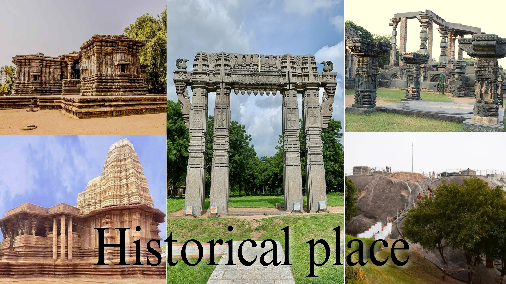

Parks & Gardens
• Zoological park
• Geo-Bio diversity cultural park
• Public gardens
• Kakatiya musical garden

Temples
• Sri bhadrakali temple
• Ramappa temple
• 1000 pillar temple
• Sri mallikarjuna temple
• Sammakka Sarakka

Historical places
• Ramappa temple
• Warangal fort (kala thoranam)
• 1000 pillar temple
• Warangal museum
• Ekashila Gutta

Church's
• ECCLESIA FULL GOSPEL CHURCH,
• EVANGELICAL BAPTIST CHURCH ,
• CENTENARY BAPTIST CHURCH ,
• HOSANNA MANDHIR
• FATHIMA CATHEDRAL CHURCH

lakes & waterfalls
• laknavaram Lake
• Ekashila lake
• Bheemuni padam waterfalls
• Waddepally lake
• Mallanna gandi water falls
NOTE: Click on the image to redirect to the certain contant!